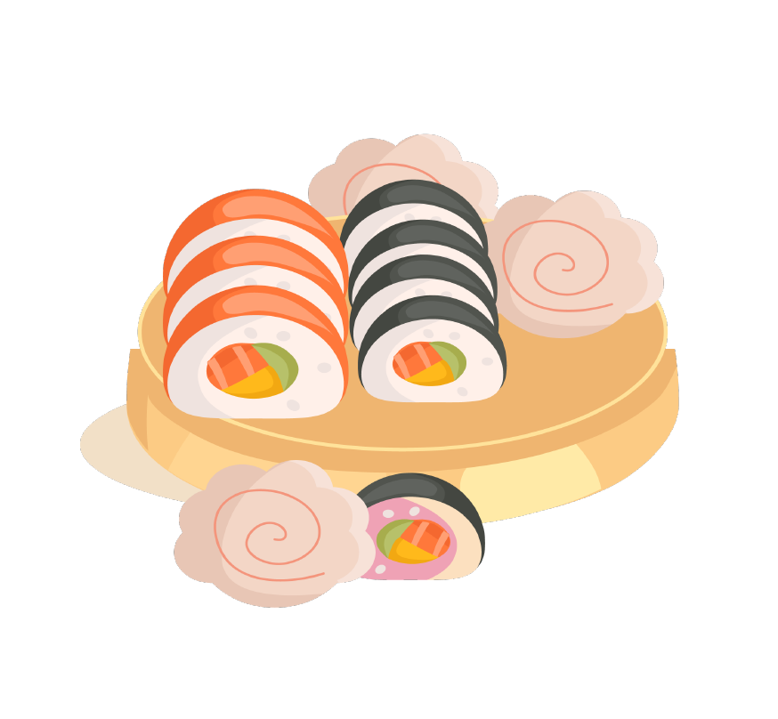

QUIENES SOMOS NOSOTROS
Somos El equipo Tirri, un gran equipo conformado por los alumnos más competitivos en cuanto desarrollo y diseño web con HTML, CSS y JS. Tratamos de plasmar en cada uno de nuestros proyectos el 100% de nuestra personalidad consiguiendo así, tener un toque que, denota una diferencia respecto a otros proyectos. Tratamos de consagrar un "Sello de la casa".

CUAL ES NUESTRA META
Tenemos como objetivo convertir nuestra web en una experiencia inigualable para cualquier usuario. Tenemos una meta clara, ser la oveja negra del rebaño. Con la realización de este proyecto, preveemos obtener una gran cantidad de nuevos conocimientos en el ambito del desarrollo web comercial.